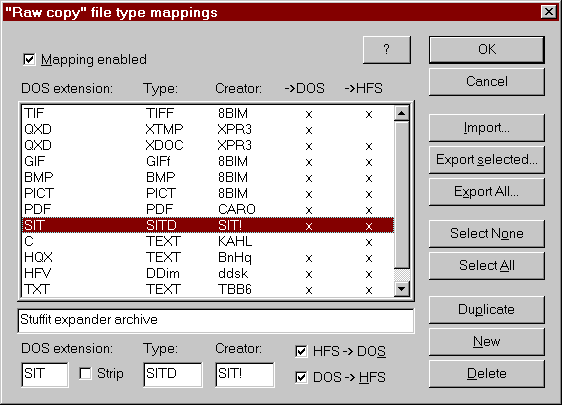

Note that you can have multiple mappings for one dos extension in direction HFS->DOS, but only one in direction DOS->HFS. Similarly, many dos extensions may map to the same type/creator pair, but in the direction HFS->DOS only one type/creator pair is allowed. The example should make this less confusing.
If the currently selected item conflicts with some other item, you will see text CONFLICT at the top of the dialog. Typically you'll see this after every DUPLICATE command until you change the new line. Conflicts are removed when you restart the program or open the dialog again.
Your default mappings are saved in "\Windows\HFVExplorer.ftm". Back up this file when you have done most of your definitions.
Tip: select some items in HFVExplorer list view, right-click one of
them and give command "Map selected items" (or hit F4).

Mapping enabled:
If "Mapping enabled" is not selected, no mappings are performed (except those made by other copy modes).
"?":
Shows some help.
Strip:
Removes (strips) the DOS extension when a file is copied to HFS volume. Potential pitfall: take care not to copy two or more files which would degenerate to the same name ... only one of them would remain. Sorry about that. Will be fixed some time in future.
HFS -> DOS:
DOS -> HFS:
You can specify that the conversion will take place when transferring files from DOS to HFS, vice versa, or both.
Import...:
Combines FTM files with the current list. If there is a conflict, old definition is overwritten -- no questions asked.
Export, Export selected...:
Use these to backup your definitions or share them with other people. Saves FTM files.
Duplicate:
After duplicating the selected mapping, there is always a CONFLICT. Edit the conversion directions, ot type/mapping info to remove the conflict.